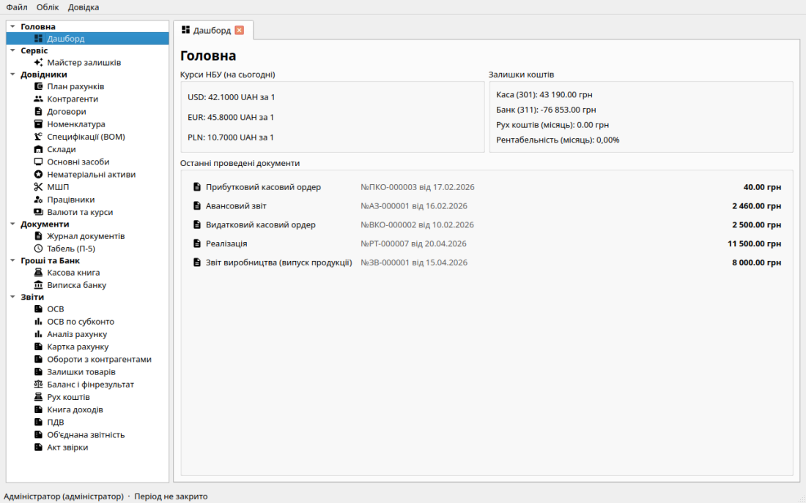

Стартова сторінка
Стартова сторінка — це ваш головний екран, який відкривається одразу після
входу в програму. Тут зібрано найважливішу оперативну інформацію про стан
вашого підприємства.

Курси НБУ, залишки каси й банку, рух коштів і рентабельність за місяць,
останні проведені документи.
Що відображається на стартовій сторінці?
-
Курси валют НБУ: актуальні курси USD, EUR та PLN на поточну дату.
Курси автоматично підвантажуються з офіційного API НБУ.
-
Залишки коштів: поточний стан готівки в касі (рахунки
301 + 302) та безготівкових коштів на банківських рахунках
(рахунки 311 + 312) — так само, як у звіті «Рух коштів». Залишок
розраховується з абсолютною точністю на основі всіх проведених
документів у Головній книзі аж до сьогоднішнього дня (включаючи
початкові залишки).
-
Рух коштів і рентабельність (поточний місяць): чистий рух по
301/302 + 311/312 і маржа за фінрезультатами (детальніше — звіт
«Рух коштів»).
-
Останні проведені документи: акуратна таблиця з 5 останніх
операцій у системі за поточний рік. Містить іконку типу документа,
номер, дату та суму, дозволяючи миттєво побачити останні зміни у базі
даних.
Як оновити дані?
Дані на стартовій сторінці оновлюються автоматично при її відкритті. Якщо
ви щойно провели новий документ (наприклад, касовий ордер або банківську
виписку), просто перейдіть на іншу сторінку в меню (наприклад, "Журнал") і
поверніться назад на "Стартову", щоб побачити актуальні залишки.